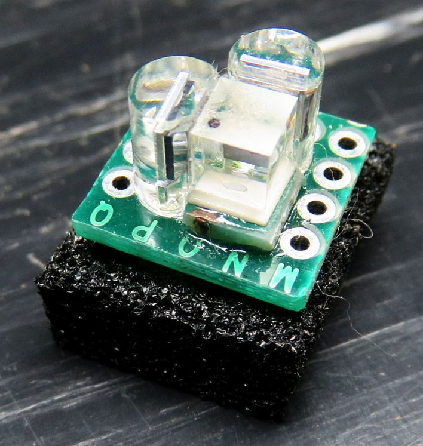
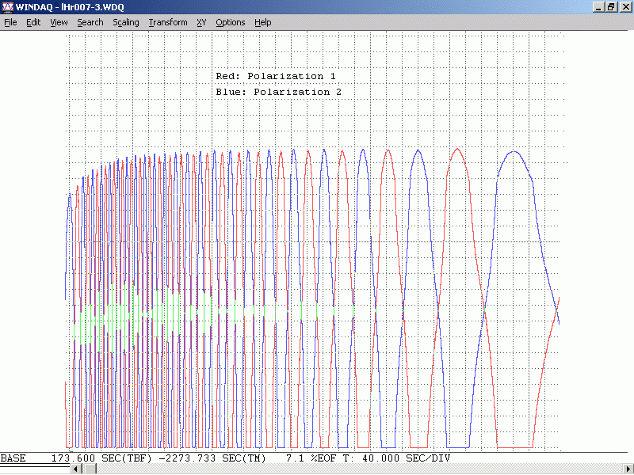

Laser/optical components in this kit
Note: where both the HeNe laser power supply and heater run on 12 VDC, a single higher current 12 VDC adapter may be provided.
Arduino controller components in this kit
Much more on the µSLC1 controller at: Micro Stablized Laser Controller 1 (µSLC1) Installation and Operation Manual. It includes specifications, assembly instructions, and information on the µSLC1 firmware and Windows Graphical User Interface (GUI). Controller components in this kit
What you will need to provide

CAUTION: I may include barrel connectors to screw terminal blocks or jacks for the DC power packs. These are very convenient to use but since the DC power (barrel) connectors are identical for the 12 V and 24 V supplies, make sure you don't accidentally swap them as bad things will happen. Thus, hard-wiring at least one of the power connections is recommended.
The laser power meter can simply be a silicon photodiode and multimeter or microammeter since actual power measurements aren't needed. The photodiodes included in the kit, and P-Mode and S-Mode redouts and plot of µSLC1 can serve this function even if the laser isn't entirely assembled.
Power and wiring:
Hooking up power to the tube correctly is critical to its survival and life.
Follow the link to the type of power supply and adapter that was included in the kit:
Install the heater:
For the ~1 inch diameter tube, the 2x3" heater should be wrapped around so it covers nearly the entire circumfrance. (3 inch dimension goes around it.) The Kapton heater has an adhesive backing. Peel off the backing paper and stick it on centered between the two end-caps. For convenience (this is sort of arbitrary) orient it with the wire connection point lined up with the tip-off (the small metal tube where the air was removed and the gas was inserted). Press it firmly in place over its entire surface. To help keep it in place, it is advisable to add some high temperature Kapton or similar tape. DO NOT attempt to bend any Epoxy covering the connections - let it stick out a bit. Applying too much force could result in the Epoxy popping off and taking one or both connections with it.
Determining the polarization axes of the tube:
Note that the laser tube actually produces 2 beams: The "main" beam is 25-100 times or more powerful than the "waste" beam. For the stabilized laser, the detector for feedback may be positioned in the waste beam, which will then not reduce the available power from the main beam. But if desired, a portion of the main beam can be split off using a glass plate like a microscope slide, and that can be used instead. In principle, using a portion of the main beam for feedback will have slightly better stability, especially for some tubes. Also note that if the beam sampler is mounted at 45 degrees, the two modes will differ by 4:1 or more amplitude because it is near the Brewster angle. But it can be oriented near-normal so largely avoid this issue. A "variable attentuator plate" that may be used is included. If not found in a baggie, it may be installed in one of the tube mounts (where it was originally used as a variable attenuator).
With the tube is powered, place a continuous reading laser power meter in the output beam. This can be one of the photodiodes connected to a VOM or DMM set to its µA range, or wired up for input to the P-Mode or S-Mode signals of µSLC1 Atmega board with the µSLC1 GUI running in the "Hangout" state. Use a linear polarizer (LP sheet of PBSC) to identify the orientations of the polarized modes of the tube. The angles of the polarization axes will be where the variation in power due to mode sweep is maximized. For these short tubes, the power in each mode will actually go down to very close to zero when the polarizer is aligned with one of the axes. There will be two such angles orthogonal to each-other. For reasons not fully understood, one of these often more or less lines up with the exhaust tip-off at the cathode-end of the tube. Label the axes and adjust the orientation of the tube so one is either vertical or horizontal, whichever causes the tip-off to be closest to the bottom (for convenience, the photons really don't care).
Note: The "tip-off" (gas fill pipe) on the cathode-end of the laser tube may interfere with orienting the tube optimally for the polarization axes to line up. In that case, either the PBS will need to be oriented appropriately, or a different mounting scheme may need to be used for the cathode-end of the tube.
The power varies because the longitudinal modes of the laser cavity are moving through the neon gain curve as the tube expands due to heating. The roughly bell-shaped gain curve results in gain variation depending on its height. If 5-10 VDC is applied to the heater (between the two heater wires), the rate of the mode sweep will greatly increase since the tube is expanding faster making it easier to determine the axes.
As the tube/heater combination approaches thermal equilibrium where the power input from the electrical discharge in the bore of the laser tube and heater power are balanced by heat loss to the environment, the mode sweep will slow down and eventually stop. If power is removed from the heater at that time, the discharge heat alone will no longer be able to sustain the same temperature, the tube will start to cool, and the mode sweep will reverse.

This shows the mode sweep from a cold start of a tube similar to the type included in the kit. If both the P-Mode and S-Mode photodiodes are wired to the Atmega with the sensitivity adjusted so the peaks are near 5 V, then the µSLC1 plot will be very similar in appearance. If the heater is also connected, with µSLC1 in the "Hangout" state, it can be turned on or off or set anywhere in between to change the speed and direction of mode sweep.
For thermal stabilization to be effective, what is desired is where a modest amount of heater power is needed to be at thermal equilibrium. Perhaps 20-30 percent of the power in the bore discharge. For the 6 inch tube running at at 3 mA, 900 V, the bore discharge power is just under 3 W. So, 1 W of heater power should be sufficient to allow the laser to stabilize with reasonable immunity to ambient temperature changes. Using a 3 or 4 VDC power supply, it should be possible to simulate the action of an electronic feedback circuit to confirm that stabilization is possible.
A purist might object (due to noise considerations), but this means that a single 5 or 6 VDC power supply could be used for both the HeNe laser power and the stabilizer. However, using the 12 VDC power supply for the heater is recommended.
Checking the beam sampler:
Cut a piece of a sticky black label or other similar opaque material to be about the same size as the mirror glass at the rear of the tube (order of 6-8 mm or 1/4 inch). (Use a Magic Marker to turn a white label black if needed so it's more or less opaque.) Use a tiny drill bit or similar tool to make a clean 0.7 to 1 mm hole in it. With the laser powered, stick this aperture over the rear end mirror so the weak waste beam passes through it. The purpose of the aperture is to block "bore light" from affecting the photodiodes in the beam sampler. (The tube provided may already have something like this in place but you might want to improve upon it.)
Place the PBS on a support behind the tube so the waste beam passes through its center and a deflected beam shoots off to one side. Eventually it will need to be mounted securely, but for now, a block of wood or stack of CDs and CD boxes will suffice.
Now use a white card as a screen to observe the weak beam coming straight back out of the PBS and the beam being reflected to the side. They will vary in intensity along with the polarized modes coming out the front. One of the photodiodes will be placed behind the PBS cube and the other on the side. If necessary, fine tune the tube orientation so each of the beams goes completely dark periodically during mode sweep. Devise mounts for the PDs so each of the beams strikes its respective PD and any reflections do not go back into the tube.
Testing the photodiodes response to laser light:
To test the response of the silicon PhotoDiodes (PDs) included in these kits, a simple test circuit using a few resistors, a 5 VDC power supply (or USB charger cube), and DMM can be constructed before connecting the Arduino board. To determine the polarity of the PDs, use the DMM on the "Diode Test" range across the pins: The voltage drop will be between 0.5 and 0.6 V if the red probe is connected to the anode. The polarity is usually opposite for a VOM but they are only found in museums these days. ;-)
Wire up a test circuit as follows:
V1
o
R Protect PD1 | R Load 1
+5 VDC o----/\/\----+-----|<|---+---/\/\-----+
| |
| V2 |
| o |
| PD2 | R Load 2 |
+-----|<|---o---/\/\-----+
|
|
GND/RET o-------------------------------------+
CAUTION: If the PDs are at the anode-endo of the tube, take care to keep the setup at a safe distance as they won't like being zapped by the high voltage. Nor will you. :( :)
Closing the loop:
To stabilize the laser so that the position of the modes is under automatic control requires some electronics to first run the tube in "Preheat Mode" so that the temperature of the tube/heater combination levels off somewhat above ambient, and then to "Lock Mode" to allow the output of one or both photodiodes to take control. This is the purpose of the Arduino compatible µSLC1 controller.
Complete installation and assembly instructions may be found at Micro Stablized Laser Controller 1 (µSLC1) Installation and Operation Manual.
The output of the laser when locked will be the two orthogonal linearly polarized modes whose the amplitudes can be adjusted over a fairly wide range via the trim-pots and µSLC1 firmware settings, while retaining mode purity. To use this rig as a single frequency laser for something like holography or homodyne interferometry, one of the modes should be blocked with a Linear Polarizer (LP) such as another PBS cube (for best efficiency) or a sheet polarizer.
For some applications like homodyne interferometry, it can also be a Circular Polarizer (CP) intended for a camera or a piece of a $2 CP sheet used as a contrast enhancer for the LCD on some electronic gadgets, though only ones that so far appear to have a CP are Game Boy displays (GBA/GBC, about $2 on eBay) or a large sheet of the stuff as "Circular Polarized Films" on Amazon, $$). These consist of an LP sandwiched with a Quarter WavePlate (QWP). With the output beam of the laser entering the LP-side of the CP with its polarization axis aligned with one of the laser's modes, the result will be single frequency with circular polarization. The linear polarization axis will be labeled on a camera filter and at 45 degrees for the CP sheet.
Enhancements/experiments:
Lack of wedge means that there will be reflections from its outer surface back into the laser tube. But more significantly, there will be etalon efffects between the outer uncoated glass surface and the mirror which will result in a slight ripple in output power (in addition to mode sweep) as the tube warms up and may reduce the overall stability. The intensity of the waste beam will vary in lock-step, but much more dramatically. A simple fix is to add a glass plate at a small angle (a few degrees) using clear 5 minute Epoxy, UV cure optical adhesive, or clear RTV Silicone. Index matching adhesive is best but almost any type will be close enough to greatly reduce the retroreflections. DON'T use Crazy glue (cyanacrylic) or hard Epoxy!!! as these may damage the optics and/or are more difficult to remove if desired.